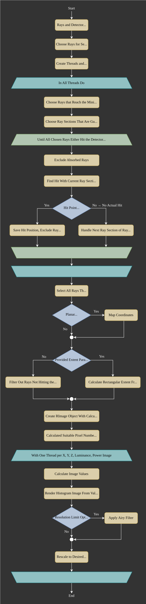

5.3. Image and Spectrum Rendering#
5.3.1. Image Rendering#
Image rendering consists of two stages:
Hit detection with the detector
Image calculation from ray position and weights
Hit finding for a detector is more complicated as a normal surface, as there are no requirements for the detector position. It is therefore also possible for the detector to be inside other surfaces.
Instead of calculation a surface hit once, is is calculated for all sections of a ray that are inside the z-range of the detector. After knowing the hit coordinates, one can check if they fall inside the region where the ray section is defined and if it is therefore is a valid hit. In the other case only the ray section extension hits the surface, but the ray already changed direction due to a adjacent surface.
To speed things up, calculations are done in threads, while each thread gets a subset of rays. Rays not reaching the detector at all, starting before it or getting absorbed before hitting the detector are sorted out as early as possible.
At the end of the procedure it is known for each rays if it hits the detector and where. If an extent option was provided by the user, only the rays inside this extent are selected. Otherwise the rectangular extent gets calculated from the outermost rays.
If the detector is not planar (e.g. a sphere section) the coordinates are first mapped with a projection method that are described in Section 5.3.2. For all hitting rays a two-dimensional histogram is generated, with a beforehand defined pixel size. The pixel count is higher as requested, as each image is rendered in a higher resolution to allow for resolution changes after rendering, see Section 4.8.3.
Image rendering is also done in threads. The created RImage object hold images for the three tristimulus values X, Y, Z, that can encompass all human-visible colors. The illuminance image can be directly calculated from the Y component and the pixel size, so an explicit rendering of this image is not required. The fourth image is an irradiance image, which is calculated from the ray powers and the pixel sizes. The aforementioned threads each get one of the four images.
After image rendering the image is optionally filtered with an Airy-disk resolution filter and then rescaled to the desired resolution.
{kind=link}

Fig. 5.11 Detector intersection and image rendering flowchart.#
5.3.2. Sphere Projections#
The relative distance to center and the z-position of the other sphere end are
Equidistant
Adapted version of [1].
The projected coordinates are then
Orthographic
The hit coordinates \(x\) and \(y\) are kept as is. Related: [2].
Stereographic
Adapted version of [3].
The projected coordinates are then
Equal-Area
Adapted version of [4].
The projected coordinates are then
5.3.3. Spectrum Rendering#
Spectrum rendering works in a similar way to image rendering.
Ray intersections are calculated, only hitting rays are selected and a histogram is rendered.
But compared to an image, this is a spectral histogram within a wavelength range resulting from the rays wavelengths and powers.
Instead of an RenderImage a LightSpectrum object is created with type "Histogram".
The number of bins for the histogram is:
This formula ensures \(N_\text{b}\) is odd, so the center is well-defined. Independent of the number of rays \(N\) the minimum of bins is set to 51 and scales with the square root of this number above a specific value. The latter is due to the SNR of the mean also increasing with \(\sqrt{N}\) for normal-distributed noise. So the number of bins is adapted so that the SNR stays the same, but the spectrum resolution increases.
5.3.4. Spectrum Color#
Analogously to Section 5.7.1 the tristimulus values for the light spectrum \(S(\lambda)\) can be calculated with:
From there on, typical color model conversions can be applied.
References